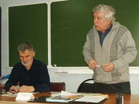

|
Заседание российского комитета рабочих
23-24 марта 2013 года

Часть 1
Доклады:
Петров Владимир Александрович, председатель портового комитета Российского профсоюза докеров морского порта Санкт-Петербурга;
Шишкарев Василий Иванович, наладчик агрегатных станков АМО ЗИЛ, Москва;
Кудрявцев Владимир Михайлович, регулировщик ННИИРТ, Нижний Новгород
Часть 2
А.Н. Николаев, электромеханик Российского строительного управления «Гранит», г. Королев Московской области;
Е.С. Гаевский, кладовщик ООО «Минимакс», г. Самара;
Н.П. Чугунов, машинист филиала ОАО «МРСК-ЮГ» «Астраханьэнерго»;
С.С. Маленцов, член исполкома объединения рабочих профсоюзов «Защита труда»;
В.В. Кальвит, электромонтер ЗАО «Саровская генерирующая компания»;
Л.В. Гамов, научный сотрудник ВНИИЭФ, сопредседатель объединения рабочих профсоюзов «Защита труда»,г. Саров;
А.С. Казеннов, доктор философских наук, профессор, заведующий кафедрой философии и социальных коммуникаций Санкт-Петербургского государственного торгово-экономического университета, консультант РКР
Часть 3
Ю.В.Горбач,вожатый служебных собак ОАО «Метровагонмаш», г. Мытиши Московской области;
М.В. Попов, доктор философских наук, профессор Санкт-Петербургского государственного университета, консультант РКР;
А.Н. Лапшин, ведущий специалист по экономическим вопросам Ивановского областного объединения профсоюзов г. Иваново;
А.П. Шумаков, представитель РКР по Ивановской области;
О.А. Мазур, кандидат экономических наук, научный руководитель Невинномысского института экономики, управления и права.
Часть 4
Л.В.Гамов;
А.В. Золотов (доктор экономических наук, профессор, научный консультант Российского комитета рабочих, Нижний Новгород);
О.Б. Бабич (зам. председателя Федерации профсоюзов России, Москва);
О.А. Мазур
Часть 5 (М.В.Попов;
Н.П.Французов, водитель ООО «Хлебный экспресс»)
Часть 6
С.С. Маленцов (профсоюз "Защита", Ленинград);
А.Н. Николаев;
В.И. Горбачёв, токарь Ленинградского металлического завода;
В.А. Кузнецов, токарь Ленинградского металлического завода;
А.Н. Лапшин;
Н.В. Обнорский, электромонтер-ремонтник ОАО «Владимирское производственное объединение «Точмаш»;
А.П. Шумаков;
Н.П. Чугунов;
В.М. Кудрявцев;
А.В. Золотов;
М.В. Попов
Часть 7
С.С.Маленцов, профсоюз "Защита" (Ленинград);
А.Н. Лапшин;
С.С. Лебедь, слесарь механосборочных работ ОАО «Метровагонмаш», г. Королев Московской области;
В.М. Кудрявцев;
А.П. Шумаков;
О.А. Мазур;
В.И. Горбачёв;
Д.С. Ярцев, монтер ООО «РЭЙС», Москва;
Е.С. Гаевский;
В.И. Шишкарёв;
В.В. Кальвит;
А.А. Мозгалевский, оператор Ленинградского интнернет-телевидения, Красного ТВ;
Н.П. Чугунов
Часть 8
Обсуждение проектов постановлений Российского комитета рабочих.
Часть 9
Продолжение обсуждения проектов постановлений Российского комитета рабочих.
Часть 10
Интервью участников заседания РКР.
|